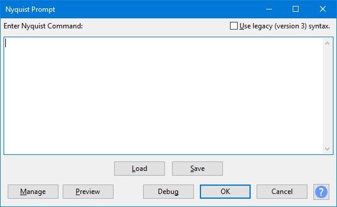

Nyquist Prompt
- Accessed by:
- 
{kind=link}
Enter Nyquist Command
Type the command as required. Enter on the keyboard moves the cursor to a new line. The last entered code is stored in the pluginsettings.cfg file in Audacity's folder for application data so is retained after exiting Audacity.
Plugin GUI can be tested if you include complete Nyquist Plug-in Headers.
Use legacy (version 3) syntax
When selected, commands entered in the main text window will be interpreted as the "version 3" code. When not selected (default), commands entered in the main text window will be interpreted as "version 4" code.
Version 4 code includes a number of variables that are not available in version 3. In particular, the S variable is no longer used to pass sound from Audacity to Nyquist. In version 4 the S variable has been replaced by *TRACK*. Full details about the difference between version 3 and version 4 code can be found in the Audacity wiki.
Buttons
- Load a Nyquist plugin or script file saved with .ny extension.
- Save the current contents of the editor window as an .ny file.
- Opens a dropdown menu where you can save the window contents as a preset then reload those contents by selecting the preset. You can also see some descriptive text about the plugin. For details see Manage presets.
- Previews what the code would sound like if applied. As with preview in all effects, playback lasts for the length of preview specified in Playback Preferences.
- The Debug button works as it does in all Nyquist effects. Clicking this button shows a progress dialog for processing the code, followed by an uneditable "Nyquist Output" window listing any errors or other output. Click to close the output window and process the command, or use Enter on the keyboard. Hold Ctrl on Windows or ⌘ on Mac before pressing Enter.
- Applies the code to the waveform selection without debug output. Your entered code will be retained next time you open Nyquist Prompt in the Audacity session. Using the keyboard, hold Ctrl on Windows (or ⌘ on Mac) then press Enter.
- No code is processed or debugged. Any code you entered after opening the window this time will be discarded.
| Advanced users: An experimental "Nyquist Workbench" graphical editor module is available if you compile the module and Audacity from source code, then enable the module in Modules Preferences. |